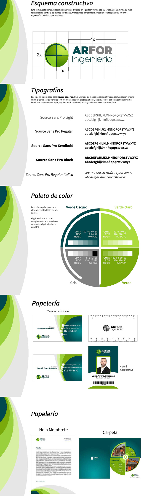

×

ARFOR Ingeniería
Desarrollo de la imagen corporativa y manual de marca para ARFOR Ingeniería, una empresa enfocada en soluciones técnicas y material de ingeniería topográfica. El proyecto incluye la creación de un logotipo sólido, paleta cromática, aplicaciones gráficas y un manual corporativo que garantiza coherencia y reconocimiento.
ver más